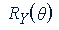
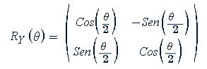

Este código implementa uma simulação da dinâmica de um qubit sujeito a uma rotação em torno do eixo Y da esfera de Bloch, representando a ação de uma perturbação externa — como um campo magnético fraco. Ao aplicar uma rotação no estado quântico, o gráfico mostra como a probabilidade de medir o qubit em 0⟩ ou 1⟩ sendo que a rotação é parametrizada por um ângulo θ, variando de 0 a π.
A matriz de rotação  aplicada ao estado inicial é definida como:
Essa variação de probabilidade é a base dos sensores quânticos de spin: eles detectam mudanças minúsculas no ambiente observando como o estado do qubit se altera. Mesmo perturbações muito pequenas podem causar grandes mudanças na medição, o que torna esses sensores extremamente sensíveis e úteis em diversas áreas.
O gráfico gerado representa essas probabilidades em função do ângulo θ, evidenciando a sensibilidade do qubit à perturbação. Essa propriedade é explorada em sensores quânticos de spin, que utilizam a evolução do estado quântico como mecanismo de detecção. Pequenas variações no campo externo provocam mudanças mensuráveis na distribuição de probabilidades, permitindo a detecção de sinais extremamente fracos com alta precisão.
Aumentando o número de medições ("shots") reduz o que é conhecido como "ruído de projeção quântica" (a incerteza estatística). Com mais medições, os resultados medidos se aproximam mais das probabilidades teóricas, permitindo detectar perturbações ainda menores com maior confiança(Tem uma explicação do que seria o Ruído de Projeção Quântica na pagina inicial).
Este é o princípio do sensoriamento quântico: usar a delicadeza dos estados quânticos para realizar medições muito além das capacidades dos sensores clássicos.